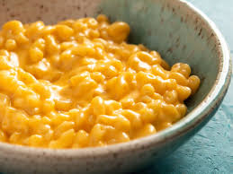

Mac and Cheese

This perfect baked macaroni cheese recipe comes with a creamy cheese sauce, a hint of mustard and uses leftover French stick its crunchy topping
Ingredients
- 50g baguette
- 2 tbsp butter
- 350g short pasta
- 1 garlic clove
- 1 tsp english mustard powder
- 3 tbsp plain flour
- 500ml whole milk
- 250g vegetarian mature cheddar
- 50g parmesan
Steps
- Heat the oven to 200C. Spread the baguette chunks over a baking sheet, drizzle with butter. Bake for 6 mins until crisp, then set aside.
- Boil the pasta for 2 mins less than stated on the pack, then drain. Meanwhile, melt the butter in a saucepan. Add the garlic and english mustard powder, cook for 1 min, then stir in the plain flour.
- Cook for 1 min more, then gradually whisk in the milk until you have a lump-free sauce. Simmer for 5 mins, whisking all the time until thickened. Take off the heat, then stir in the cheddar and half the parmesan.
- Stir the pasta and some seasoning into the cheesy sauce. Tip into a large ovenproof dish, or four individual dishes.
- Scatter over the bread and the remaining parmesan, then bake for 20 mins until crisp and golden.